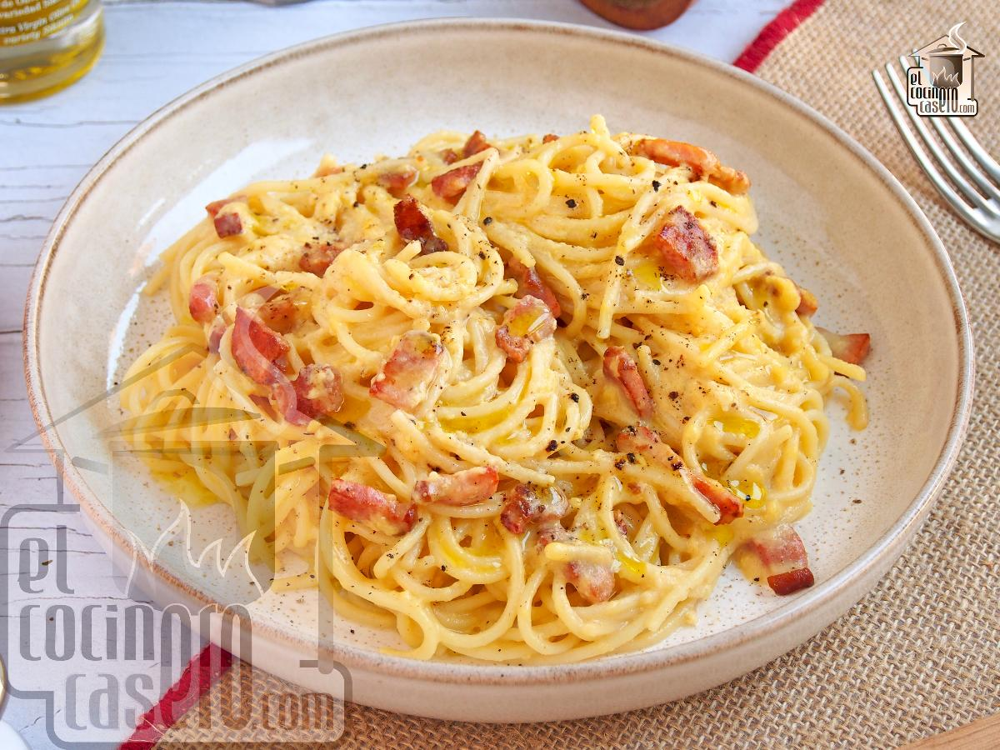

Espaguetis a la Carbonara
Ingredientes
- 400 g de espaguetis
- 150 g de panceta o bacon
- 3 yemas de huevo
- 50 g de queso parmesano rallado
- Sal y pimienta negra al gusto
Pasos
- Cocer los espaguetis en agua con sal hasta que estén al dente.
- Dorar la panceta en una sartén sin aceite.
- Mezclar las yemas con el parmesano y un poco de pimienta.
- Escurrir los espaguetis y mezclarlos con la panceta.
- Retirar del fuego y añadir la mezcla de huevo y queso, removiendo rápidamente.

Plato de espaguetis a la carbonara.